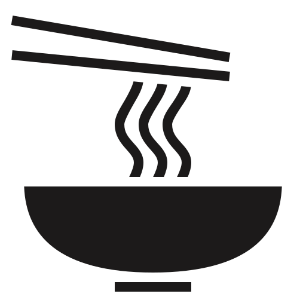

école hôtelière
Institut d’Enseignement Cardinal Mercier
- 2026
- 5e année en septembre
- Section
- Hôtelier(ère) - Restaurateur(trice), enseignement technique de qualification
- Braine-l’Alleud
- Chaussée de Mont-Saint-Jean 83, 1420
Braine-l’Alleud — Brabant wallon
17 ans, en section hôtellerie-restauration à l’Institut Cardinal Mercier. Je cherche un job étudiant en cuisine ou autre : week-ends, congés scolaires et vacances d’été.
01
école hôtelière

hygiène

pratique
02

2025 - en cours
Brasserie des Artistes — Ittre
Mise en place complète du poste avant le service : taillages, fonds, sauces, portionnage.
Envoi des entrées et des desserts pendant le coup de feu, dressage à l’assiette, régularité d’une assiette à l’autre.
Nettoyage et rangement en fin de service, respect strict des normes HACCP.
brasseriedesartistes.be2025
Brasserie des Artistes — Ittre
Stage d’immersion prévu au programme de l’école.
Découverte du rythme réel d’une brasserie : cadence du service, communication entre les postes, gestion des retours.

2025 - en cours
Brasserie des Artistes — Ittre
Accueil et placement des clients, prise de commande, conseil sur la carte.
Service à l’assiette, service des boissons, débarrassage, redressage des tables, terrasse en saison.
Encaissement et clôture ; gestion des rushs du week-end sans perdre le sourire.
Depuis 2023
Institut Cardinal Mercier
Services de banquet et réceptions organisés par l’école : mise en place de la salle, service synchronisé, découpe et flambage devant le client.

Été
Transind — Braine-le-Château
Grossiste en articles de sport et de camping.
Travail au stock : réception et rangement des marchandises, gestion des produits, préparation et suivi des livraisons.
Un rythme différent de celui d’un service, mais la même exigence : savoir où se trouve chaque chose et tenir les délais.
Été
All Ride — skateboard
Tenue du stock : rangement et suivi des références.
Préparation des commandes : prélèvement des articles, contrôle de la commande, emballage avant expédition.
Une commande incomplète se voit tout de suite : on vérifie avant de fermer le colis, jamais après.
où j’ai travaillé
Rue Basse 11 — 1460 Ittre
où j’étudie
Chaussée de Mont-Saint-Jean 83 — 1420 Braine-l’Alleud
03
Ce que l’école et le service m’ont appris à faire, geste par geste. Cliquez sur une photo pour l’agrandir.

cuisine
Julienne, brunoise, mirepoix, paysanne, jardinière. La régularité du couteau décide de la cuisson et du dressage.

cuisine
Fond blanc, fond brun, roux. Béchamel, velouté, espagnole, tomate, hollandaise — et les dérivées qui en sortent.

cuisine
Rôtir, sauter, griller, pocher, braiser, glacer. Reconnaître une cuisson à l’œil et au toucher plutôt qu’à la montre.

cuisine
Habiller, écailler, vider, lever les filets, désarêter. Découper une volaille en huit morceaux sans rien perdre.

cuisine
Équilibre, hauteur, couleurs, bord d’assiette impeccable. Et surtout : la vingtième assiette identique à la première.

cuisine
Organiser son poste, anticiper les quantités, tout avoir à portée de main avant le premier bon. Le service se gagne avant le service.

pâtisserie
Brisée, sablée, sucrée, feuilletée, à choux, levée. Fonçage, abaisse, tourage et cuisson à blanc.

pâtisserie
Crème pâtissière, anglaise, chantilly, mousseline. Monter des blancs, réussir une meringue, rattraper une ganache.

pâtisserie
Tempérage à la courbe, moulage, copeaux et décors. La brillance et le craquant ne pardonnent aucun degré d’écart.

salle
Nappage, dressage du couvert, alignement au millimètre, pliage des serviettes, vérification de la verrerie.

salle
Sens du service, pince, plateau, synchronisation de la brigade pour que toute la table soit servie en même temps.

salle
Travailler devant le client : découper une volaille, lever une sole, flamber un dessert. Le geste fait partie du plat.

salle
Recevoir, placer, conseiller, noter sans se tromper, annoncer les allergènes, gérer une réclamation avec calme.

salle
Ouvrir une bouteille dans les règles, servir une bière belge dans son verre, températures, accords simples avec la carte.
Aucune technique dans cette catégorie.
04
Ceux que j’aime préparer, tirés de la carte de la maison.

Croquettes aux crevettes grises Le classique de la maison. Une béchamel serrée, un décorticage patient, une panure qui doit rester croustillante à cœur fondant. Tagliatelles carbonara
Aucune crème, un jaune d’œuf et le lard : la sauce se lie hors du feu ou elle tourne. Le plat qui apprend à sentir la température.
Tagliatelles carbonara
Aucune crème, un jaune d’œuf et le lard : la sauce se lie hors du feu ou elle tourne. Le plat qui apprend à sentir la température.
05
J’aime le rythme d’un service : on n’a pas le temps de réfléchir deux fois, il faut être prête avant.
Je suis ponctuelle, je tiens ma place dans une brigade, et je préfère demander une fois de trop
que de laisser passer une erreur dans l’assiette.
En salle comme en cuisine, je garde le sourire quand ça s’accélère — c’est là que le métier se joue.
06